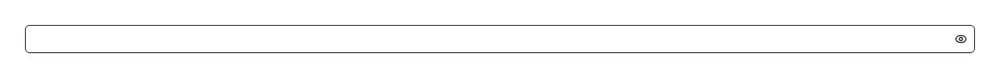

A password field with the show/hide eye already built in — the one control every sign-up form needs and shadcn/ui does not ship. It is a drop-in replacement for `<input type="password">`: every native prop passes straight through (`name`, `autoComplete`, `required`, `minLength`, `placeholder`, `disabled`, `onChange`), and the ref lands on the field itself, so `register()` from react-hook-form and a shadcn `FormField` bind to it exactly as they would to a bare input. Reach for it in sign-up and registration forms, login and sign-in screens, change-password and reset-password flows, the “confirm password” field beside it, the password half of a credentials dialog, a database or SMTP connection form, and any secret — an API key, a token, a recovery phrase — that a person has to read back to check they typed it correctly. The reveal toggle is where hand-rolled versions go wrong, so all five decisions are already made: the button’s accessible name follows the state (“Show password” when hidden, “Hide password” when shown) rather than freezing on one of them; `aria-pressed` reports whether the password is currently visible; the eye is `aria-hidden`, so a screen reader hears the name and not the glyph; the button is `type="button"`, so pressing it inside a form does not submit the form; and it is deliberately kept out of the tab order — a keyboard user tabbing off a password should land on the submit button, not on a reveal control they did not ask for. It stays reachable by mouse, touch and screen-reader navigation. Common asks it answers: “password input”, “password field with show hide”, “show password toggle”, “reveal password button”, “eye icon password input”, “toggle password visibility react”, “password visibility toggle component”, “hide password input”, “shadcn password input”, “shadcn password field”, “login form password field”, “sign up password input”, “react password input component”, “MUI password field equivalent”, “antd Input.Password equivalent”, “chakra password input equivalent”. shadcn/ui’s own `input` is the plain field — it takes a `type` and styles it, with no toggle, no eye and no mention of passwords anywhere in its source; `input-group` is a layout kit for placing an adornment beside a field, which leaves the toggle’s behaviour and its accessible naming for you to write. This is that field with both already decided. Pair it with this registry’s `password-strength`, the meter that goes underneath and scores how many guesses a password would survive: this component is the field, that one is the verdict on what gets typed into it. Needs `lucide-react` for the eye.

Rendered on the shadcn default neutral palette with harness-generated props.
pnpm dlx shadcn@4.21.0 add @pulld/password-input
| licence | POINTER |
|---|---|
| primitive base | none |
| type | registry:ui |
| files | src/components/ui/password-input.tsx |
| npm deps pulled | none beyond the pre-installed peer set |
| registry deps | — |
| semantic / palette / hex | 6 / 0 / 0 |
| writes shared ui/ | yes — can overwrite the project’s own primitives |